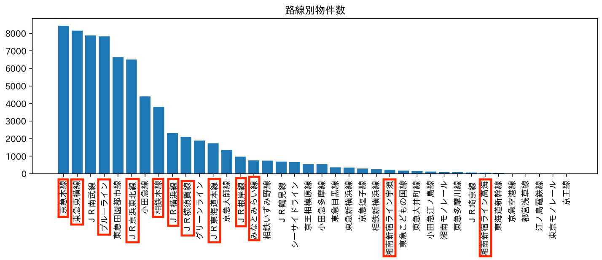

YouTuberにおすすめな神奈川県内の物件
私たちの班はそれぞれがYouTuberにおすすめな物件を神奈川県内で探そうというテーマで決まりました。
そこで私は、
PKA channel(ぴーかっぱあっぷる) あっぷるちゃん
におすすめな物件を探すことにしました。
まずはあっぷるちゃんに合う物件の情報や条件を絞ります。
↑ ここで紹介されているように、あっぷるちゃんは10月頃に【都心の2LDK（マンション）】に引っ越したことがわかります。
東京都の2LDKの家賃相場
↑ このサイトからわかるように、東京都で2LDKのマンションを借りようとすると（相場）月々13.2万円ほどかかることがわかります。
よって、あっぷるちゃんに合う部屋としては、マンションの2LDKの部屋で、家賃は13.2万円前後であるということになります。
PKAが所属している事務所は、MIHA株式会社です。
PKAの所属事務所 MIHA株式会社
MIHA株式会社の本社は東京都世田谷区玉川1丁目14番1号楽天クリムゾンハウスにあり、
東急田園都市線 二子玉川駅 徒步1分 の場所にあります。
↑ この情報から、東急田園都市線 二子玉川駅にアクセスがしやすい神奈川県内の駅の近くに住まいを探すことが必要です。
横浜駅から二子玉川駅までの電車
↑ この情報から、横浜駅周辺のマンションか、横浜から自由が丘まで利用する東急東横線沿線で見つけることが望ましいことがわかります。
マンションで物件を探す理由として、あっぷるちゃんが現在マンションに暮らしていることや、
YouTuberの多くがマンションの1室を借りて生活しているということもありますが、それ以外にも
このように神奈川県内で物件を探す際、マンションの物件数の母数が多いため、より良い物件を探すことができるのではないかと考えたからです。
横浜から自由が丘まで利用する東急東横線沿線の物件の間取りを調べてみると、
このように多くの間取りの部屋があることがわかります。
今回探している【2LDK】の部屋は東急東横線沿線に60〜70件ほどあることがわかります。
神奈川県内の路線沿線で物件を探してみると、

このように多くの物件があることがわかあります。
今回探している東急東横線には約8000件の物件があることもわかります。
東急東横線沿線でなくても、横浜駅周辺でも良い物件があればいいいなと思い、
上の表に書かれている路線のうち、横浜駅を通っている（横浜駅まで一本で来れる）路線を赤く囲ってみました。
この赤く囲ってある路線で探すと考えると物件数も多く、住みたい条件に合った部屋がより探しやすいのではないかと感じました。
しかし、やはり自由が丘まで一本で行けることや、事務所まで乗り換えが2回で済むことや東急東横線に8000件の物件があることから
東急東横線沿線で物件を見つけることのほうが良いという考えになりました。
家賃と合計時間でも検索をかけてみると、
このような結果になりました。
＜ 結論 ＞
横浜駅を通っている路線の中から家賃の安さや合計時間から見て、相鉄本線や京急本線も良いのではと思いましたが、
1番有力と考えていた東急東横線が家賃8万円前後ということや合計時間も30分前後であることから、
やはり東急東横線で物件を見つけるのが良いのではという結論に至りました。